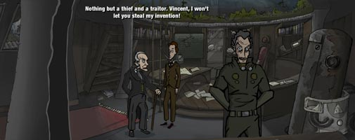
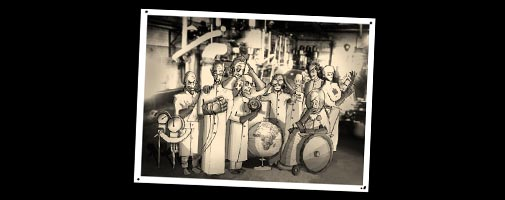
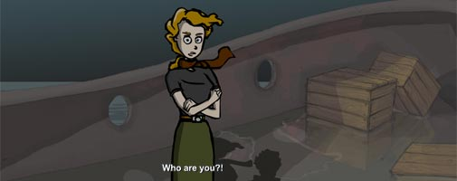

About
What Makes You Tick? (2007) and its sequel What Makes You Tick: A Stitch in Time (2010) are classic point-and-click adventure games created by Matthias Kempke (Night of the Rabbit, Pillars of the Earth) and co-authored by Greg MacWilliam (Lassie adventure engine).

The series brings to life motifs of Franz Kafka and Edgar Allen Poe. Classic adventure gamers and literary fans will enjoy the rich world, witty characters, and wry humor of the Tick series.
Story Overview
Part 1: “What Makes You Tick?”
The prequel game, “What Makes You Tick?” is available for free download, and there's a live play-through video on YouTube. You may want to play the prequel game before reading this overview!

A young man named Nathan is sent by the University of B. to deliver an important message to one of their former faculty members, Dr. William Coppelius. Nathan is sent to Coppelius’ last known residence to warn the doctor that he may be in grave danger.

Nathan arrives in the wheat fields around Coppelius’ home to begin his search for the doctor. Nathan first encounters Coppelius’ sick grand daughter, Nora, who suffers from an ailing heart.

After finding his way into Coppelius’ home and secret laboratory, Nathan finally catches up with Dr. Coppelius to deliver his message. But Nathan is too late… a dangerous man named Vincent has already arrived, and confronts Nathan and Coppelius.

Vincent’s connection to Coppelius is revealed through an old photograph. The photograph shows Coppelius and Vincent among a group of nine scientists who used to work together at the Smith Institute for Advanced Research. The nine colleagues created brilliant and powerful inventions together; but they were forced to disband when Vincent tried to steal their work to serve his own lust for power. The nine scientists destroyed their research and dismantled their prototypes to keep them from Vincent, then split up and went into hiding.

However, Vincent has discovered that one of Coppelius’ inventions –a mechanical heart– has survived. Coppelius implanted the heart in Nora, his sick grand daughter, to save her life. After learning where the heart is hidden, Vincent kidnaps Nora and escapes in a stolen ship. The story ends with Nora trapped at sea with Vincent asking, “I just want to know… What Makes You Tick?”.

Part 2: “What Makes You Tick: A Stitch in Time”
A young man named Nathan and a brilliant scientist—one Dr.William Coppelius—arrive in the seaside village of Ravenhollow in pursuit of Coppelius’ kidnapped granddaughter…

Meanwhile, another young man named Nigel Trelawney has been summoned to this sleepy fishing village to settle the estate of his late father, Dr. Anthony Trelawney. In his prime, Dr. Trelawney was one of nine elite scientists working at the Smith Institute for Advanced Research. Unfortunately, the Smith Institute members were forced to disband when a traitor was revealed among them. Now the Smith Institute stands silent and abandoned just outside of Ravenhollow, and Nigel arrives to sort through the remaining pieces of his father’s life.
However, Nigel soon discovers that not all is at peace within Ravenhollow. The shadow of a nearby castle has fallen over the village since a recluse baron—unseen within the castle walls—has amassed a security force to lock down the village. Tyranny and oppression have gripped the villagers, and newcomers are subject to intense scrutiny. As Nigel struggles to resolve his father’s estate amongst adversaries hidden within the castle, he begins to realize that the source of the deception plaguing Ravenhollow leads back to the Smith Institute and its untimely end; and that the matter of his father’s estate may be the key to finding Coppelius’ kidnapped granddaughter.
Bringing to life the literary themes of Franz Kafka, What Makes You Tick: A Stitch in Time embarks on a whole new epic adventure. Both new and familiar faces bring the world of Ravenhollow to life and encourage players to explore this world of many secrets during the day and at night!
About the Authors
 Matthias “Matt” Kempke hails from Kiel, Germany. In 2003 Matt moved to Leipzig to study Japanese and African Culture in addition to German language instruction. Matt created the original What Makes You Tick? during university, and subsequently worked on A Stitch in Time during a university sabbatical. Matt has since worked for Daedalic Entertainment where he created Night of the Rabbit and an adaption of Ken Follett’s Pillars of the Earth, and now works as a freelance author. In his free time, Matt enjoys movies and old radio shows, visiting strange places, meeting friends, and planning his next adventure game.
Matthias “Matt” Kempke hails from Kiel, Germany. In 2003 Matt moved to Leipzig to study Japanese and African Culture in addition to German language instruction. Matt created the original What Makes You Tick? during university, and subsequently worked on A Stitch in Time during a university sabbatical. Matt has since worked for Daedalic Entertainment where he created Night of the Rabbit and an adaption of Ken Follett’s Pillars of the Earth, and now works as a freelance author. In his free time, Matt enjoys movies and old radio shows, visiting strange places, meeting friends, and planning his next adventure game.
 Greg MacWilliam is the creator and software engineer of Lassie Adventure Studio, the Flash-based game engine behind the What Makes You Tick? games. Greg comes from Rochester, New York (USA) where he graduated from RIT with a degree in multimedia technology. Greg has since worked for Vox Media building digital brands including Polygon and The Verge, and now works for ... . In his free time, Greg enjoys the great outdoors, being a dad, and dreaming of traveling the globe again.
Greg MacWilliam is the creator and software engineer of Lassie Adventure Studio, the Flash-based game engine behind the What Makes You Tick? games. Greg comes from Rochester, New York (USA) where he graduated from RIT with a degree in multimedia technology. Greg has since worked for Vox Media building digital brands including Polygon and The Verge, and now works for ... . In his free time, Greg enjoys the great outdoors, being a dad, and dreaming of traveling the globe again.

Stitch concepting: Swiss Alps, 2007.
Matt and Greg met online over a decade ago through cooperation on a Monkey Island fan site. Their common love of adventure games kept them in frequent contact, until they finally met in Leipzig, Germany in 2004. Their friendship and camaraderie have continued to grow since, and their work on adventure fan sites has evolved into making full-blown adventure games together. They have taken frequent adventures together over the years from wandering Berlin to hiking the Swiss Alps. Their planning and production of “What Makes You Tick: A Stitch in Time” took them from Prague, Czech Republic to the wilds of the American West.

Stitch puzzle planning: Grand Canyon, 2009.